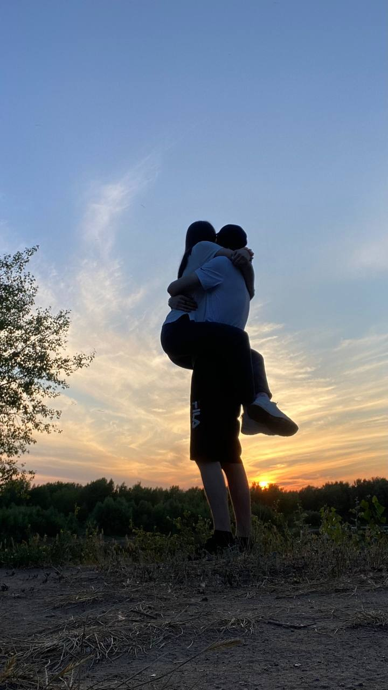
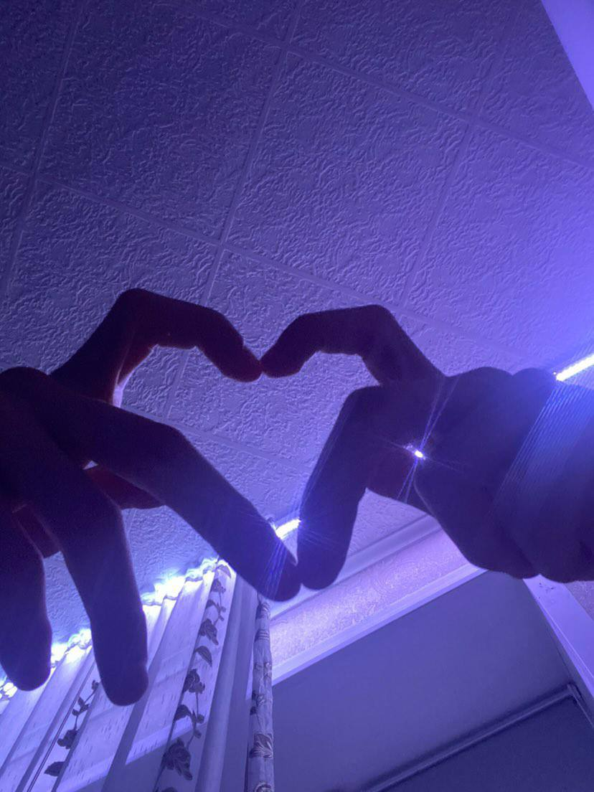

Это был год глубины и понимания. Мы погрузились в отношения, научились
слушать и слышать друг друга без слов. Этот год принёс нам уверенность,
взаимное уважение и осознание того, что мы созданы друг для друга.
1095
дней вместе
∞
моментов понимания
100%
уверенности в нас
Глубины 2023 года
Моменты, которые показали нам глубину наших чувств
Встреча рассвета
Любовь

Фотосессия на закате
Милый момент

Тот самый стикер
Наша история 2023
Наши парные кольца
Символ нашей любви, который мы носим до сих пор...
Помнишь, как я пытался подарить сюрпризом? Ты долго не хотела закрыть глаза на время чтобы я смогу быстренько надеть кольцо на твой пальчик, всё пыталась подглядеть, что же я там приготовил для тебя.
Вопрос: Когда были подарены парные кольца?
Тот самый стикер
Популярное сердечко пальцами, которое теперь везде...
Я даже не думал, что этот момент станет таким популярным. Просто захотел сделать тебе приятно, сложил пальцы сердечком, и сфоткал. Теперь этот стикер живёт в тысячах наших сообщениях, но для меня он всегда будет только твоим.
Вопрос: Когда был сделан популярный стикер сердечко пальцами мною?
Подарок от тебя
То, что ты подарила мне на День всех влюблённых...
Я не ожидал. Честно. Это был такой классный подарок который будет всегда напоминать мне - о нас.
Вопрос: Какой был подарок от тебя на 14 февраля 2023 год?
Наше лесное приключение
Первый раз, когда мы уехали вдвоём подальше от города...
Ты боялась всяких букашек, а я давно хотел выбраться на природу с тобой, было так хорошо тишина и твоя счастливая улыбка. Мы сидели на поваленном дереве, кушали сосиски, особенно те самые очень вкусные огурцы (которые ты замориновала - они были шикарны) и говорили о том, как классно было бы жить в таком месте.
Вопрос: Когда был первый совместный поход в лес?
Тот самый залетевший видос
3 миллиона просмотров — и всё это случилось с тобой...
Я выложил и забыл. А через пару дней открыл — 100 тысяч, потом 500, потом миллион. А я думал только об одном: «Видела? Это же мы. Там ты на видео». И ты прислала просто: «горжусь тобой ❤️».
Вопрос: Что за видос залетел у меня на 3 миллиона?
Коды для доступа
Пройди все воспоминания 2023 года и ответь на вопросы правильно,
чтобы получить коды для дальнейшего прохождения.